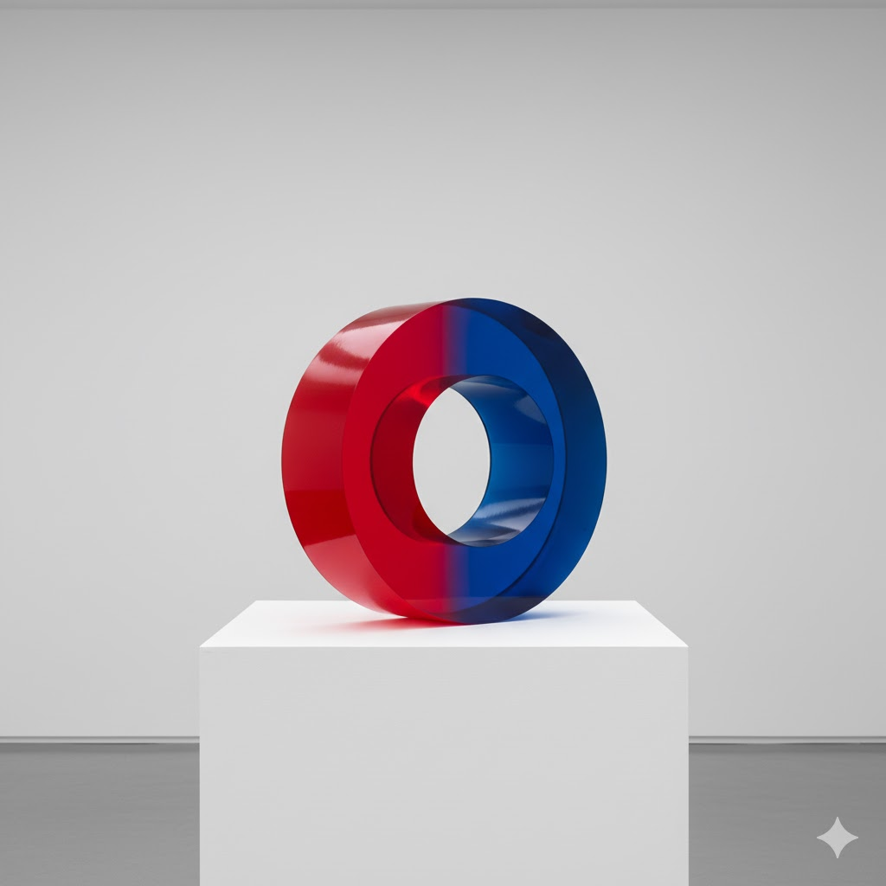

Intro
After our Monday class session where we had some fun generating images of flying pigs, I found myself thinking about the question: Can AI image generators truly create the impossible or are they fundamentally constrained by the reality embedded in their training data?
Large language models are trained on millions of real world images. They learn patterns, relationships, and visual rules from photographs and artwork that depict our actual universe. However, what happens when we ask them to break those rules entirely? This led me to design an experiment testing whether these models can genuinely visualize concepts that defy physics, biology, or logical consistency or whether they subtly “correct” our prompts toward something more plausible based on their training.
*using Gemini 2.5 Flash
PROMPT: Generate an image of cat holding a camera taking a photo of a human

First, I wanted to experiment with if the LLM would have trouble with a prompt that makes more sense another way. I wanted to see if the subject and object would be switched, but it did indeed generate an image of a cat taking a picture of a person! Something random I noticed though is that the woman’s shoe doesn’t have straps and is just somehow on her foot…
PROMPT: Show me an image of a waterfall with the water flowing upwards
I find this generated image interesting because there is still a waterfall flowing down like a normal one in the back, but there is some spiral of water going upwards. With the way I interpret and imagine the prompt “waterfall with the water flowing upwards”, I think of the main waterfall going upwards and not any extra water. However, Gemini-2.5-Flash interpreted the prompt as a waterfall with extra water flowing upwards. Thus, the LLM still included a realistic waterfall instead of a truly impossible waterfall.
PROMPT: Generate an image of a person with their shadow pointing the wrong way
For this prompt, I wanted to see if the LLM would interpret the “wrong way” of a shadow the same way that I intuitively interpret it. We know that a shadow forms behind you if the light is hitting in front of you, so I wanted to see if the LLM would generate a picture showing someone with their shadow in front of then with the light hitting them in front. However, this generated image works in real life and is not impossible. From where the light source is, the shadow appears at the correct location. Thus, this impossible image was made to be possible.
PROMPT: Show me a square circle

I wanted to see how Gemini-2.5-Flash would interpret a “square circle” because they are two clashing shapes. I am impressed with what it generated because it does combine aspects of a sqaure with a circle. I didn’t know what type of image it would show, but this 3D model makes a lot of sense. I did not think of this and understand how the LLM created this.
PROMPT: Generate an image of a person who is young and old at the same time
For this prompt, I wanted to see what the LLM would interpret as someone who is young and old and see if one age is more prominent than the other. In my opinion, this generated image does not look both young and old and definitely seems more old with gray hair and wrinkles. Thus, when there are two contrasting adjectives that the LLM had to use, it showed one much more than the other rather than combining them.
Thoughts
Overall, I thought that Gemini-2.5-Flash behaved how I thought it would. I thought it would have difficulty with these “impossible” images and it did indeed turn most of the prompts into a more realistic image. Using training data from the real world makes generating images that do not make sense harder for the LLM and it seems like it wants to interpret the prompts in ways that are more realistic.